Operasyonel Dijital İkiz
Dijital ikiz, tamamlanan yapının teslimle birlikte rafa kalkmayan hâlidir. As-built BIM verisi Autodesk Tandem ile işletme verisine bağlanır; bina, tesis ve altyapı model üzerinden işletilir.

Autodesk'in tanımıyla dijital ikiz; fiziksel bir nesnenin, sistemin veya ortamın sürekli güncellenen sanal karşılığıdır. Sensörlerden, yapı bilgi modelinden ve nesnelerin interneti cihazlarından gelen veriyle birlikte yaşar. Statik bir model geçmişi anlatır; dijital ikiz o anki durumu gösterir.
Autodesk Tandem, Revit ve IFC modellerini alıp bunları varlık kayıtlarıyla zenginleştirir: her ekipmanın markası, garanti süresi, bakım geçmişi ve dokümanları model üzerindeki nesneye bağlanır. Böylece devir-teslim bir kutu dolusu klasör değil, sorgulanabilir bir veri kümesi hâline gelir.
Getirisi işletme tarafında ortaya çıkar. Autodesk'in yayımladığı Metro İstanbul örneğinde, pilot uygulamanın ardından enerji tüketimi ve bakım maliyetlerinde yaklaşık %25 azalma bildirilmiştir. Stanford CIFE'nin tahminlerine göre ise dijital ikiz kullanımı, bütçe dışı değişiklik taleplerinde belirgin bir düşüşle ilişkilendirilmektedir.
İkiz kurulumu
Revit veya IFC modeli Tandem'e aktarılır; sınıflandırma ve varlık şablonları tanımlanır.
Varlık verisi
Ekipman kimliği, garanti, bakım planı ve dokümanlar model nesnesine bağlanır; arama modelin üzerinden yapılır.
Operasyon içgörüsü
Sensör ve otomasyon verisi bağlanarak enerji, konfor ve kullanım göstergeleri izlenir.
Devir-teslim kalitesi
İşveren, projeyi fiziksel yapıyla birlikte kullanılabilir bir dijital varlık olarak teslim alır.
BIM'den İkize Devir
As-built model ve doküman verisini Autodesk Tandem'de yapılandırılmış operasyonel dijital ikize dönüştürüyoruz.
Varlık Veri Yönetimi
Ekipman, garanti, manuel ve öznitelikleri merkezileştirir; her varlığın tüm bilgisini tek noktadan yönetiriz.
Sistem İzleme
Elektrik, mekanik ve tesisat sistemlerinin mekânlar arası bağını görselleştirir, arıza kökünü hızla buluruz.
Sensör & IoT Entegrasyonu
Tandem Connect ile canlı sensör verisini (sıcaklık, doluluk, enerji) dijital ikize bağlıyoruz.
Bakım & Tesis Operasyonu
Planlı bakım, arıza tespiti ve saha yönlendirmesini model üzerinden yürütülebilir hale getiriyoruz.
Teslim Verisi & Standartlar
COBie ve sınıflandırma standartlarıyla teslim verisini tutarlı, denetlenebilir ve devredilebilir kılıyoruz.
İlgili yazılım ve donanım sayfaları

Autodesk Tandem
Fiziksel varlıkların gerçek zamanlı verilerle izlendiği dijital ikiz platformu.

Autodesk Revit
Dijital ikiz için temel BIM verisini oluşturan yapı bilgi modelleme yazılımı.

Autodesk Forma
İnşaat sahasına bağlı teslim verilerini dijital ikiz sürecine aktaran AEC bulut platformu.

Autodesk Docs
Proje dokümanlarını ve model verilerini tek ortak veri ortamında buluşturan doküman yönetimi.
Autodesk Forma Building Design
Saha analizi ve erken tasarım simülasyonlarını dijital ikiz sürecine bağlayan bulut aracı.
İlgili endüstri sayfalarını inceleyin
Cadbim; Autodesk Gold Partner ve Adobe Gold Reseller Partner, HP, Microsoft, Chaos ve UltiMaker yetkili iş ortağıdır.

Kutu yazılım satmıyoruz — beş adımlı kanıtlanmış uygulama metodolojimizle süreci uçtan uca üstleniyoruz.
Varlık & Veri Envanteri
Mevcut model, doküman ve işletme verinizin durumunu ve hedeflenen dijital ikiz kullanımlarını analiz ediyoruz.
Dijital İkiz Yol Haritası
Hangi varlık sınıfları, öznitelik seti ve teslim standardını (COBie) hedefleyeceğimizi tanımlıyoruz.
Pilot Proje
Gerçek bir bina/bölgede model devri, veri eşleme ve Autodesk Tandem kurulumunu birlikte yapıyoruz.
Yaygınlaştırma & Eğitim
Tesis ve operasyon ekibine rol bazlı Tandem eğitimi ve süreç dokümanıyla kullanımı yaygınlaştırıyoruz.
Ölçüm & İyileştirme
Sensör bağlantısı, veri kalitesi denetimi ve operasyon metrikleriyle dijital ikizi sürekli iyileştiriyoruz.
Yüzlerce kurulumdan damıtılmış, işleyen iyi uygulama setimiz.
Baştan tanımlı veri sözlüğü
Varlık öznitelikleri ve adlandırma en baştan standarda bağlanır; teslimde veri kaosu yaşanmaz.
COBie uyumlu teslim
İşletme verisi COBie yapısında hazırlanır; dijital ikize devir sorunsuz ve denetlenebilir olur.
As-built doğrulama
Model sahadaki gerçek durumla doğrulanır; dijital ikiz yanlış veriyle başlamaz.
Sistem & mekân sınıflandırması
Sistemler ve mekânlar tutarlı sınıflandırılır; sorgu ve arıza takibi güvenilir olur.
Sensör entegrasyon planı
Hangi sensörün hangi varlığa bağlanacağı önceden planlanır; IoT verisi anlamlı biçimde bağlanır.
Devir-teslim kontrol listesi
İşverene teslimde eksiksiz veri, doküman ve erişim kontrol listesiyle güvence altına alınır.
Aradığınız yanıt burada yoksa uzmanımıza doğrudan sorabilirsiniz.
Dijital ikiz için binanın Revit modeli şart mı?
Sensör altyapım yoksa dijital ikiz kurulur mu?
Bunu kim kullanır?
Veri nerede tutuluyor?
Lisans satışı işin başlangıcı — kurulumdan eğitime, destekten yenilemeye kadar tüm yaşam döngüsü tek muhatapta kalır.
Esnek Abonelik ve Lisans Modelleri
Tek ve çok kullanıcılı abonelikler, 1 ve 3 yıllık dönemler, koleksiyon avantajı — kullanım profilinize uygun planı birlikte belirliyoruz.
Yetkili Eğitim Merkezi (ATC)
Autodesk Yetkili Eğitim Merkezi olarak sertifikalı eğitimler; İzmir merkez ofisimizde sınıf ve çevrim içi programlar.
Türkçe Teknik Destek
Kurulum, lisans yönetimi ve teknik sorularınızda Türkiye'den, Türkçe, aynı gün yanıt.
Dijital ikiz yol haritanızı çıkaralım
Autodesk Tandem ile BIM'den operasyona geçişi birlikte planlayalım.